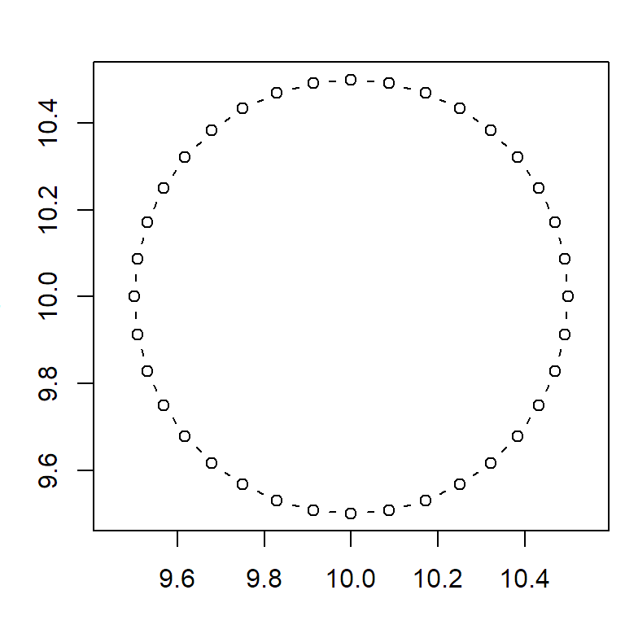
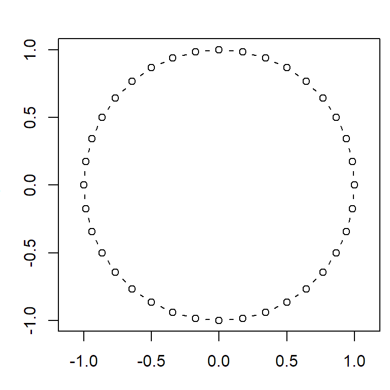

Custom Functions
Functions
A simple function.
hello_world <- function() {
print("Hello world!")
}You call custom functions like any built-in function.
hello_world()## [1] "Hello world!"Returning Values
The function will exit and return the value of
hello_world <- function() {
print("Hello world!")
return("It's a beautiful day.")
}
msg <- hello_world()## [1] "Hello world!"msg## [1] "It's a beautiful day."Tip: If you need to return a lot of unstructured stuff, return a list object.
Arguments
inch2cm <- function(x) {
return(x * 2.54)
}
inch2cm(10)## [1] 25.4Arguments are passed as copies. This means if the function modifies the argument, it won't change the argument value in the calling environment.
inch2cm <- function(x) {
cm_val <- x * 2.54
x <- x * 2
return (cm_val)
}
num_inch <- 10
inch2cm(num_inch)## [1] 25.4num_inch ## [1] 10Separate multiple arguments with commas.
circle_pts <- function(radius, ctr_x, ctr_y) {
theta <- seq(from=0, to=2*pi, by=pi/18)
xs <- ctr_x + radius * cos(theta)
ys <- ctr_y + radius * sin(theta)
return (cbind(xs, ys))
}
pts <- circle_pts(0.5, 10, 10)
head(pts)## xs ys
## [1,] 10.50000 10.00000
## [2,] 10.49240 10.08682
## [3,] 10.46985 10.17101
## [4,] 10.43301 10.25000
## [5,] 10.38302 10.32139
## [6,] 10.32139 10.38302plot(pts, type="b", asp=1)
R will throw an error message if arguments are not passed (but will not check the data type or value).
The way you make an argument optional is to give it a default value.
circle_pts <- function(radius, ctr_x=0, ctr_y=0) {
theta <- seq(from=0, to=2*pi, by=pi/18)
xs <- ctr_x + radius * cos(theta)
ys <- ctr_y + radius * sin(theta)
return (cbind(xs, ys))
}
pts <- circle_pts(1)
head(pts)## xs ys
## [1,] 1.0000000 0.0000000
## [2,] 0.9848078 0.1736482
## [3,] 0.9396926 0.3420201
## [4,] 0.8660254 0.5000000
## [5,] 0.7660444 0.6427876
## [6,] 0.6427876 0.7660444plot(pts, type="b", asp=1)
Write a function that squares the log of the argument. Test if your function is vectorized. [Solution]
log_sq <- function(x) {
log(x) ^ 2
}
log_sq(1)## [1] 0log_sq(1:10)## [1] 0.000000 0.480453 1.206949 1.921812 2.590290 3.210402 3.786566
## [8] 4.324077 4.827796 5.301898Tips and Good Practices
source("~/MyScripts/andy_utils.R")Write a function that takes as its argument a bounding box matrix and returns the aera of the bounding box.
You may recall the bounding box of a sp object is a matrix that looks like:
library(sp)
x <- SpatialPoints(data.frame(x=runif(25)*10,y=runif(25)*10))
bbox(x)## min max
## x 1.6630514 9.899581
## y 0.3874845 9.542570Here is a function definintion you can use:
bbox_area <- function(b) {
}
Here is how your defintion might work in practice
mySp <- SpatialPoints(data.frame(x=10:20,y=30:40))
mySp_ext <- bbox(mySp)
mySp_ext## min max
## x 10 20
## y 30 40bbox_area(mySp_ext)## [1] 100[Solution]
bbox_area <- function(b) {
bbox_width <- b[1,2] - b[1,1]
bbox_height <- b[2,2] - b[2,1]
return(bbox_width * bbox_height)
}
bbox_area(bbox(mySp))## [1] 100Write a function that takes two arguments:
The function should return another bounding box (matrix) with the same center but whose length and width have been increased or decreased by the factor.
Here is a function definintion you can use:
bbox_resized <- function(b, f=0.05) {
}
So for example if the bounding box was:
mySp <- SpatialPoints(data.frame(x=seq(10,30,length.out=10),y=seq(100,300,length.out=10)))
sample_bbox <- bbox(mySp)
sample_bbox## min max
## x 10 30
## y 100 300And you passed:
bbox_resized(sample_bbox)
You'd get back:
bbox_resized(sample_bbox)## min max
## x 5 35
## y 95 305[Solution]
bbox_resized <- function(b, f=0.05) {
## Compute width and height
bbox_width <- b[1,2] - b[1,1]
bbox_height <- b[2,2] - b[2,1]
## Find the max of width or height
bbox_maxdim <- max(bbox_width, bbox_height)
## Find how much to add or subtract
bbox_buffdist <- (bbox_maxdim * f) / 2
## Prepare a matrix of the offsets, including the correct signs
bbox_buffmat <- bbox_buffdist * matrix(c(-1,-1,1,1), nrow=2)
return(b + bbox_buffmat )
}
bbox_resized(sample_bbox)## min max
## x 5 35
## y 95 305bbox_resized(sample_bbox, f=0.2)## min max
## x -10 50
## y 80 320